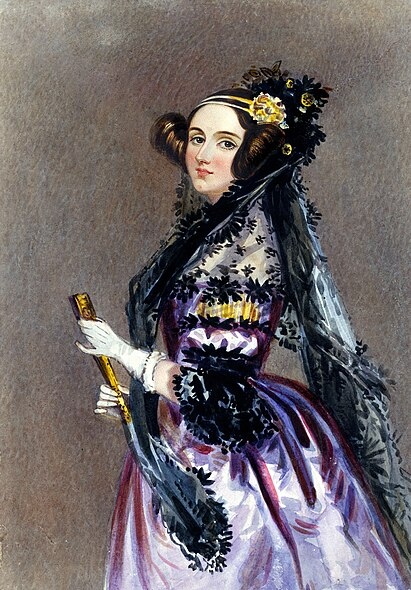

Авгу́ста А́да Кинг (урождённая Ба́йрон), графиня Ла́влейс (англ.Augusta Ada King Byron, Countess of Lovelace; более известная как Ада Лавлейс; 10 декабря 1815, Лондон, Англия, Британская империя — 27 ноября 1852, Марилебон, Лондон, Англия, Британская империя) — английский математик. Известна прежде всего созданием описания вычислительной машины, проект которой был разработан Чарльзом Бэббиджем.
Составила первую в мире программу (для этой машины). Ввела в употребление термины «цикл» и «рабочая ячейка», считается первым программистом в истории.
До рождения дочери Ады лорд Байрон ожидал, что его ребёнок будет «славным мальчиком», и был очень разочарован, когда 10 декабря 1815 года его супруга Анна Изабелла родила девочку. Ребёнка назвали в честь сводной сестры Байрона, Августы Ли, а сам поэт называл её Адой. 16 января следующего года по приказу лорда Анна Изабелла отправилась в дом своих родителей в Киркби Мэллори[англ.], взяв с собой пятинедельную дочь. Хотя на тот момент британские законы в случае развода давали отцу полную опеку над детьми, Байрон даже не пытался потребовать ребёнка себе, но попросил свою сестру держать его в курсе о делах его дочери.
Лавлейс умерла в возрасте 36 лет 27 ноября 1852 г. от рака матки. Болезнь продлилась несколько месяцев, в это время Аннабелла распоряжалась тем, с кем Ада виделась, и исключила всех друзей и доверенных лиц. Под влиянием матери Ада пережила религиозное обращение, и её уговорили раскаяться в прежнем поведении и сделать Аннабеллу своей душеприказчицей. Она утратила связь с мужем после того, как 30 августа призналась ему в чём-то, после чего он оставил её. Неизвестно, что она ему сказала. По её просьбе она была похоронена рядом с отцом, которого она никогда не знала при жизни, в церкви Святой Марии Магдалины в Хакнелле, Ноттингемшир. Мемориальная доска, написанная на латыни, посвящённая ей и её отцу, находится в часовне, пристроенной к Хорсли Тауэрс.
В 1975 году Министерство обороны США приняло решение о начале разработки универсального языка программирования. Министр прочитал подготовленный секретарями исторический экскурс и без колебаний одобрил и проект, и предполагаемое название для будущего языка — «Ада». 10 декабря 1980 года был утверждён стандарт языка.
| Имя при рождении | Августа Ада Байрон |
| Дата рождения | 10 декабря 1815 |
| Место рождения | Лондон, Англия, Британская империя |
| Дата смерти | 27 ноября 1852 (36 лет) |
| Место смерти | Марилебон, Лондон, Англия, Британская империя |
| Страна | Британская империя |
| Род деятельности | Программист, поэт, ученый в области информатики, изобретатель, переводчик, писатель - инженер |
| Научная сфера | математика и вычислительная техника |
| Место работы | Кембриджский университет |
| Известна как | «мать программирования» и первый программист в истории. |
| Награды и премии | Google Doodle |
| Автограф |